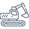

Komplexní realizace zemních a výkopových prací
Nebojíme se žádné výzvy, ani té vaší.
Stačí zavolat, o zbytek se postaráme.
Naše výhody
Hluboké stavební jámy
Disponujeme profesionálním vybavením, které nám umožňuje vyhloubit jakoukoli stavební jámu. Zvládneme vše od kopání a zvedání až po úpravu terénu.
Jakékoli místo
Pracujeme na těžko dostupných místech, ve stísněných podmínkách a provádíme také terénní úpravy na svažitém terénu.

Od minibagrů po těžké stroje
Disponujeme vlastní technikou, včetně profesionálních bagrů a rypadel, rýpacích a srovnávacích lžic, včetně čelního nakladače.
Přeprava velkoobjemové zeminy
Vykopaný materiál odvážíme na vlastní skládku a dodáváme zásypovou zeminu, ornici, substrát, písek, štěrk nebo recyklovaný materiál v libovolném objemu.